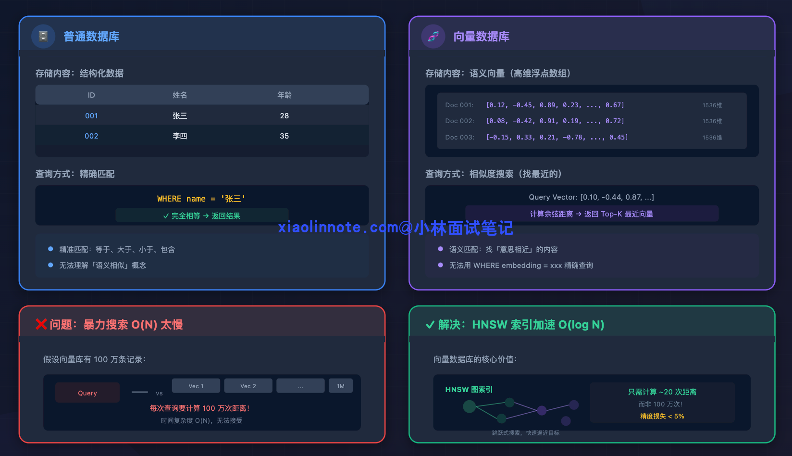
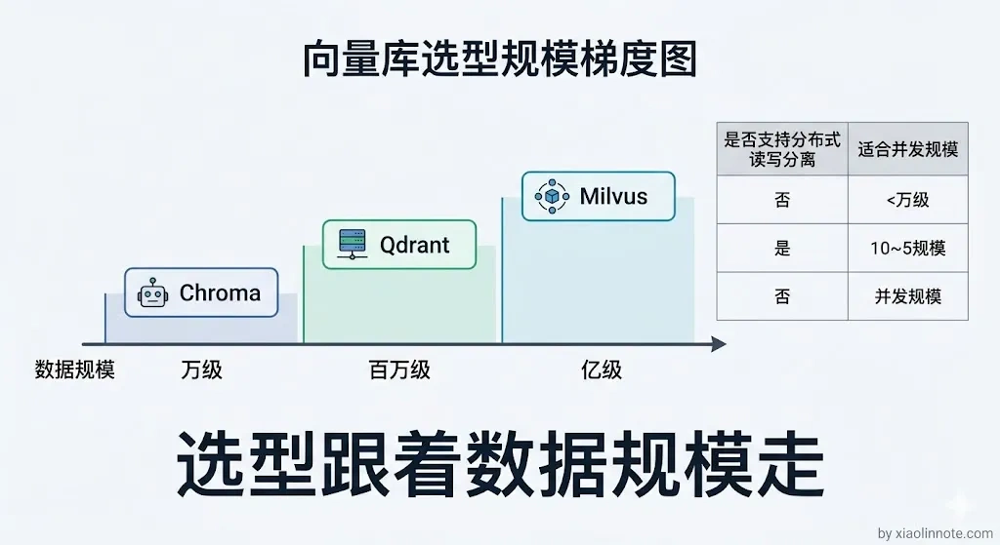
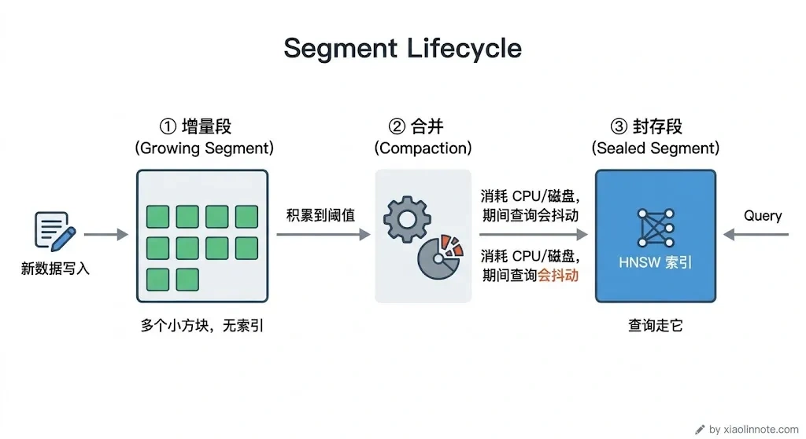
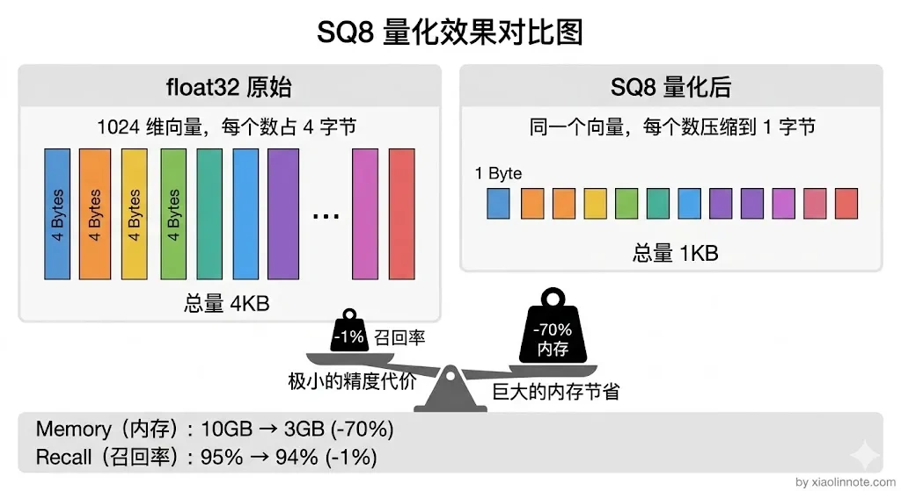
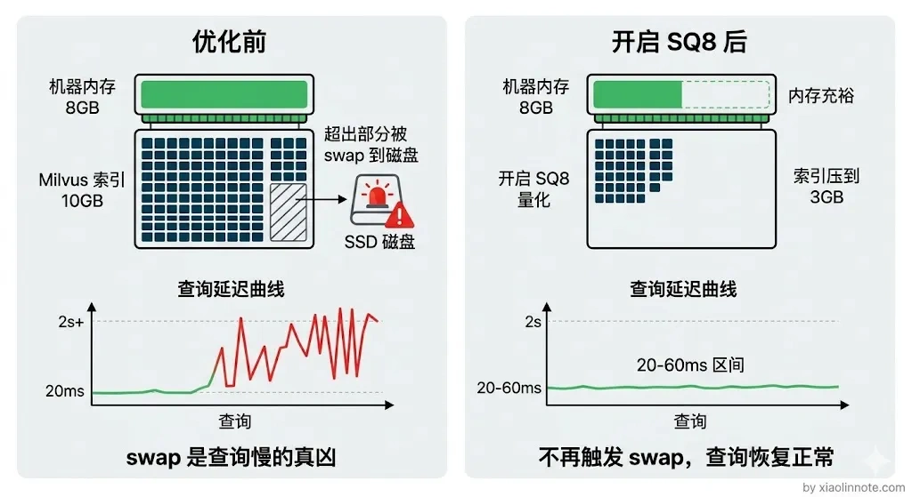
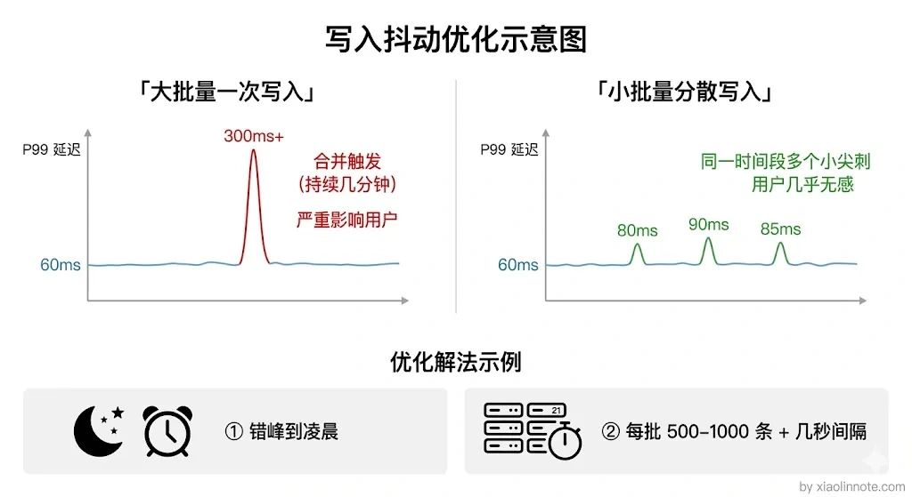

讲讲你用的向量数据库？数据量级是多大？性能如何？遇到过性能瓶颈吗？
👔面试官：你在项目里用的什么向量数据库？数据量级大概多少？
🙋♂️我：用的 Chroma，挺好用的，pip install 一下就能跑了。
👔面试官：Chroma？本地嵌入式数据库你拿来做生产？你数据量多大知道吗？
🙋♂️我：呃，好像存了几万条吧，具体没数过。性能嘛，感觉还挺快的，反正用户也没投诉，应该没什么问题。
👔面试官：几万条都没数过？性能感觉「挺快的」？你是用体感在做性能测试吗？P50 延迟多少？P99 呢？QPS 能扛多少？一个指标都说不出来？
🙋♂️我：那性能瓶颈的话……还真没遇到过，Chroma 一直跑得挺稳的，我也没怎么关注过这块。
👔面试官：几万条数据用 Chroma 单机跑，当然碰不到瓶颈了。你有没有想过数据量到百万级会怎样？内存够不够？写入会不会影响查询？Segment 合并了解过吗？面试官问的是你实际的生产经验和性能优化能力，你连基本的数据量级和性能指标都答不上来，回去积累点真实项目经验再来吧。
好吧，面试官问的是实战经验，我光会说「用了 Chroma，感觉挺快」，这不就是没做过吗。下面我以 Milvus 为例，讲讲生产环境里向量数据库的真实数据量级、性能表现和踩过的坑。
💡 简要回答
我们生产环境用的是 Milvus，数据量级在百万条向量左右，每条是 1024 维，用 HNSW 索引，单次查询的延迟在 20 到 50 毫秒。选 Milvus 主要是因为它支持分布式部署和读写分离，适合数据量大、并发高的场景。
我遇到过两个比较典型的瓶颈。
第一个是内存压力，百万级的 1024 维向量光原始数据就要好几个 GB，后来我们开启了标量量化 SQ8，把 float32 压成 int8，内存直接降到原来的四分之一。
第二个是大批量写入的时候会触发后台 Segment 合并，影响查询延迟，我们的解法是把批量写入改到业务低峰期，分批小批次写入。
📝 详细解析
先搞清楚：向量数据库是干什么的？
在讲 Milvus 之前，先理解一下向量数据库解决的是什么问题。很多人上来就问「哪个向量数据库好」，但连它要干什么都没搞清楚。
普通数据库（比如 MySQL）存的是结构化数据，查询方式是精确匹配，「找名字等于张三的记录」。但在 RAG 里，我们存的是文本的「语义向量」，查询方式是相似度搜索，「找和这段描述语义最接近的文档」。

这两件事的底层机制完全不同。语义向量是一个几百上千维的浮点数数组，你没办法用 WHERE embedding = xxx 来查，只能计算两个向量之间的距离（余弦相似度或欧氏距离），找出最近的 K 个。
那问题来了：如果向量库里有 100 万条记录，每次查询都和 100 万条逐一算距离，时间复杂度是 O(N)，太慢了。向量数据库的核心价值就是：通过 索引（最常用的是 HNSW），把查询时间压缩到接近 O(log N)，用少量精度损失换来极大的速度提升。理解了这一点，后面 Milvus 的各种设计就都有根可循了。
为什么选 Milvus？
搞清楚了向量数据库的核心价值，下一个问题就是选哪个。市面上常见的向量数据库有好几个，选型时可以按规模和场景来判断。
Chroma 上手最简单，一行 pip 装好就能用，数据存本地文件，非常适合做实验和跑 Demo，但它没有分布式能力，不适合生产。
Qdrant 用 Rust 写的，单机性能很好，部署也简单（Docker 一条命令），适合中小规模、团队运维资源有限的场景。
Weaviate 功能较全，支持多种搜索模式，适合需要向量搜索与结构化查询结合的场景。
Milvus 是功能最全、扩展性最强的开源选项，支持分布式部署，读写节点分离，能横向扩容，适合数据量在百万到十亿级别、并发查询量大的生产场景。
我们选 Milvus 主要是数据量级上去了，单机已经撑不住，需要分布式部署；同时知识库每天都有增量更新，读写分离能让写入不影响查询服务的稳定性。

Milvus 的核心概念
选定了 Milvus，在聊具体性能数据之前，先得搞懂它的几个核心概念。这些概念直接关系到后面分析性能瓶颈时能不能听懂。
Collection（集合） 类似关系数据库里的「表」，存储一类向量数据。我们的知识库就是一个 Collection，每条记录包含：文本 chunk 的 ID、向量（embedding）、原文内容、来源文档等 metadata。
Segment（段） 是 Milvus 内部管理数据的基本单位，理解它对后面分析性能瓶颈很关键。新写入的数据先进「增量段」，像一个临时的接收缓冲区；积累到一定量后触发合并，变成「封存段」。封存段会建好索引，查询时走索引检索速度很快。但合并这个动作本身会消耗 CPU 和磁盘，就像磁盘碎片整理，把一堆小文件合并成大文件，期间会抢资源。记住这个 Segment 合并机制，后面讲性能瓶颈的时候会用到。

Index（索引） 是向量检索的关键加速结构。最常用的是 HNSW（Hierarchical Navigable Small World，分层可导航小世界图），一种图结构索引。它的核心思想是：把向量组织成多层图，查询时从稀疏的顶层开始，快速定位到大致区域，再逐层细化找到最近邻，整体复杂度接近 O(log N)。
HNSW 有两个关键参数，用社交网络来类比很好理解：
M是「每个节点最多认识几个邻居」，M 越大，图越密，找到最近邻的精度越高，但建索引的内存和时间都越多，通常设 16～32 就够了。ef_construction是「建图时每个节点考察多少候选」，越大越精确，但建索引越慢，通常设 100～200。- 查询时还有一个参数
ef（也叫search_ef）：查询时搜索的候选集大小，越大召回越准，延迟也越高，按实际需求在 50～200 之间调。可以理解为「查询时多看几个候选再决定最终答案」，ef 小查得快但可能漏掉真正最近的那个，ef 大查得慢但结果更准。
数据规模和实测性能
搞懂了概念，现在来看实际的数据。我们知识库大概有 150 万条 chunk，每条用 BGE-large-zh 模型生成 1024 维的向量，索引用 HNSW（M=16，ef_construction=128）。
先算一下原始数据的内存占用：150 万 × 1024 维 × 4 字节（float32）≈ 6GB，这是纯向量部分。实际 Milvus 进程完整跑起来大概要 10～12GB 内存，多出来的 4～6GB 不是"索引翻倍"的神秘开销，而是 HNSW 图结构本身、metadata、Collection 管理开销、操作系统缓存这些合起来的占用。你可能会想，12GB 内存而已，现在随便一台服务器都有 32GB，有什么好担心的？但别忘了这只是向量数据本身，同一台机器上还跑着应用服务、Redis、日志收集等各种组件，内存是要抢着用的。
开启 标量量化（SQ8） 之后，把每个 float32 压缩成 int8（用 1 字节代替 4 字节）。直觉上理解：就像把精确到小数点后 7 位的数字保留到小数点后 2 位，大部分语义信息其实在高位，截掉低位精度损失极小，但数据量直接缩到 1/4。内存从 10GB 降到约 3GB，召回率基本无损（通常只下降 1 个百分点以内），是最划算的一个优化，几乎没有代价。

实测查询性能（单机 16 核 32G、本地千兆网、HNSW 在内存、ef=100）：单次 top-5 查询 P50 延迟约 20ms，P99 约 60ms，并发 100 QPS 时延迟基本稳定。这里报数字一定要带上硬件和参数背景，同样是 Milvus，跑在 8 核机上、跨机房调用、或者 ef 设到 200，数字能差一个量级。这些数字才是面试官想听到的，不是「感觉挺快的」。
遇到的性能瓶颈
前面算完内存占用就应该意识到了，150 万条 1024 维向量光原始数据就要好几 GB，这在实际生产中必然会遇到内存压力。我确实踩了两个典型的坑。
瓶颈一：内存不足，查询延迟飙升
最开始没有开量化，机器只有 8GB 内存，Milvus 把向量索引加载进内存之后，留给操作系统的空间已经很小了，稍微有点内存压力就开始频繁 swap（把内存数据换到磁盘），查询延迟直接从 20ms 飙到 2s+。很多人以为查询慢是索引算法的问题，其实根本不是，是内存不够被操作系统强行 swap 了。就像你开一个很大的 Excel 文件，内存不够就开始疯狂读硬盘，卡得怀疑人生。
解法就是上面提到的 SQ8 量化，内存从 10GB 降到 3GB 左右，彻底解决了 swap 问题。还有一个辅助手段：Milvus 支持把原始向量存在磁盘上（mmap），只把索引放内存，进一步节省内存。原始向量只在需要精排时才读，对查询延迟影响不大。

瓶颈二：批量写入触发 Segment 合并，查询抖动
内存问题解决了，又来了新问题。每天知识库有增量更新，一次性写入几十万条新数据时，Milvus 后台会触发 Segment 合并操作，把多个小的增量 Segment 合并成大的封存 Segment 并建好索引。还记得前面说的 Segment 合并机制吗？这个过程很耗 CPU 和磁盘 IO，期间查询的 P99 延迟会有明显抖动，从正常的 60ms 涨到 300ms+。
解法有两个思路。一是时间上错峰，把批量写入改到业务低峰期（比如凌晨），避开查询高峰，让 Segment 合并在用户不活跃时静默完成。二是量上化整为零，把每批写入量控制在 500～1000 条以内，分成多批写，每批之间间隔几秒。这样 Segment 合并的冲击变成多次小冲击，而不是一次大冲击，每次合并规模小、耗时短，查询服务基本感知不到抖动。

🎯 面试总结
回到开头那段面试，面试官问「你用的什么向量数据库、数据量级多大」，你不能只说「Chroma，几万条，感觉挺快」。生产环境和玩具项目是完全不同的两个世界。
正确回答应该是这样的：先说清楚技术选型，我们用 Milvus，原因是数据量到了百万级需要分布式部署和读写分离。
然后给出具体的数据量级和性能指标，150 万条 1024 维向量，HNSW 索引，P50 延迟 20ms，P99 延迟 60ms，100 QPS 并发稳定。这些数字要有，不能说「感觉挺快的」。
最后讲一个你真实遇到过的性能瓶颈以及解决思路，比如内存不够开了 SQ8 量化，或者批量写入导致查询抖动做了错峰和分批处理。
这样面试官就知道你是真的在生产环境踩过坑，而不是跑了个 Demo 就来面试了。